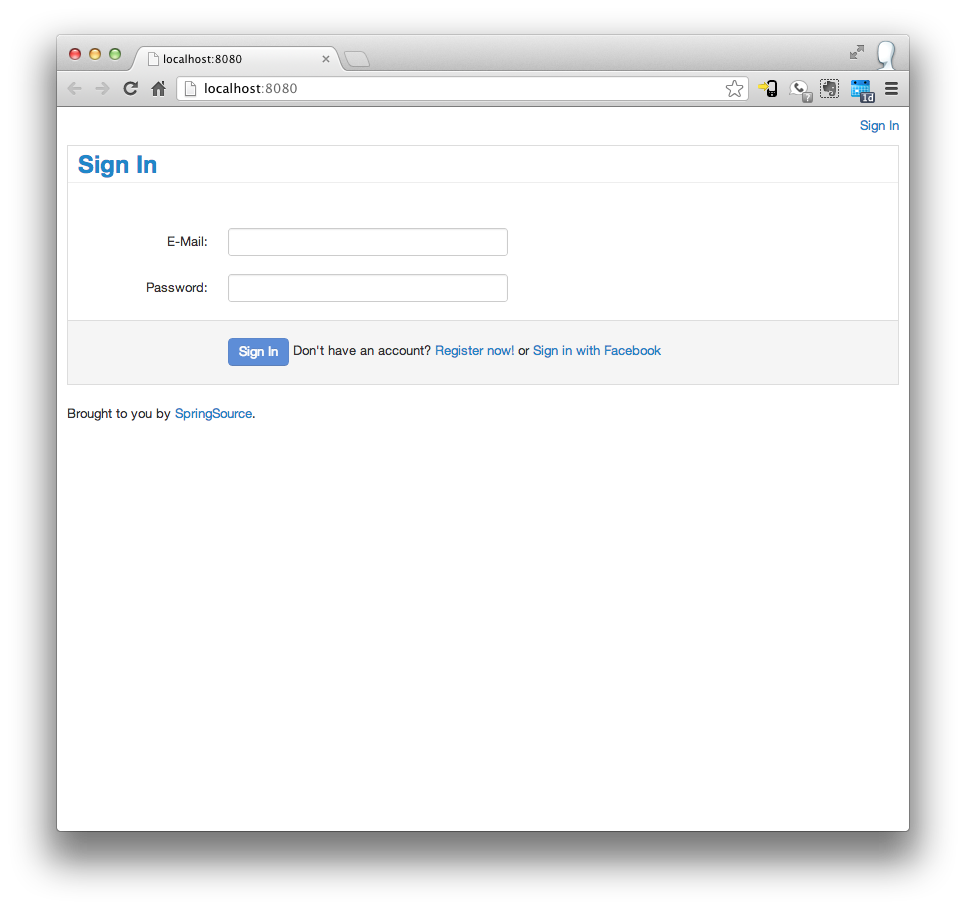
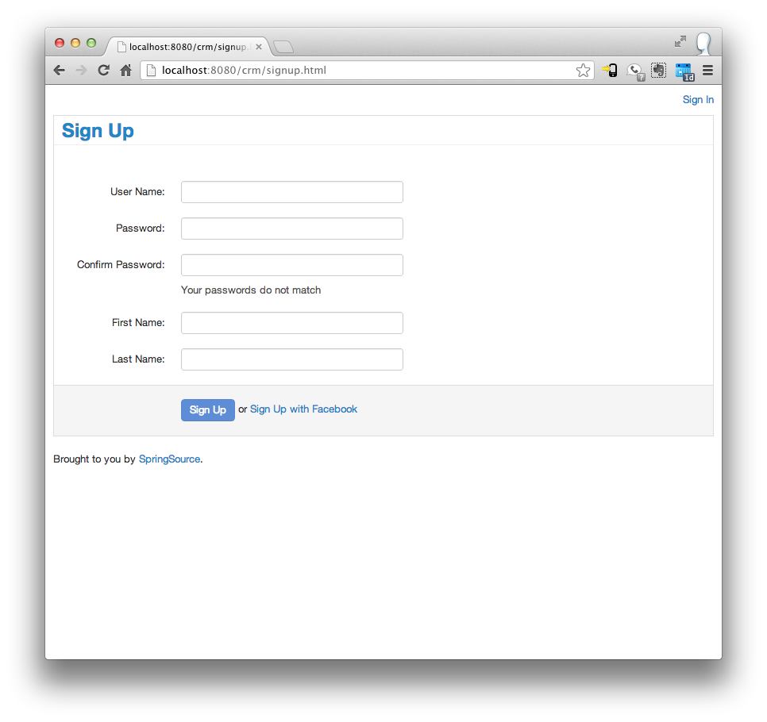
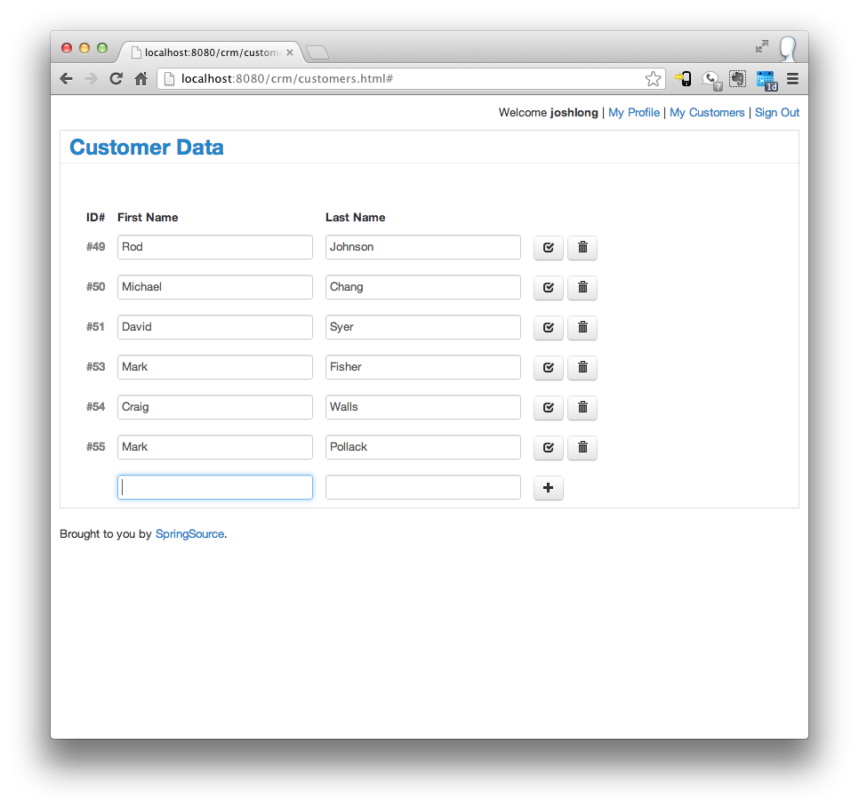

The Model-2 MVC pattern
The Model-2 MVC pattern In this tutorial we will show you how to do these things with Spring MVC:
Presumbly you've learned Java, but want to learn about web programming in Java, and you've got a good grasp on the core concepts of Spring. For more, please consult the Green Beans blogs and the core Spring tutorial as part of this set of tutorials.
Let's build a simple web application to see how the moving parts fit together. Our application will be a simple Customer Relationship manager (CRM) of sorts. Users can create an account, login and then manage simple customer records. We already have Hibernate-based backend services that manage user (org.springsource.examples.spring31.services.UserService) and customer (org.springsource.examples.spring31.services.CustomerService) data for us.
We're using the Apache Maven build tool to include those classes in our web application. To learn more about how to assemble basic service objects with the Spring framework please see our introduction tutorial. To learn more about working with Apache Maven and Spring, see this blog post. Maven requires a basic directory structure for all modules in a given Maven project. The structure looks like this:
https://gist.github.com/joshlong/4947010 Our project has two modules, services and web. services exports a services
API. The services API is your basic service tier using PostgreSQL and Spring's support for JPA. We won't say much
more about it beyond that except that it handles manipulating data in terms of the
TODO we need to show them how to setup the database and the sample application Check out the data tutorial for
details on data access with Spring. For a complete step by step introduction opn how to setup the sample application
please refer to the README.
show how to import the code and where to get it and how to use STS File > Import and how Maven helps us. Our tutorial is tool agnostic, but we recommend the free STS edition which comes wiht all sorts nice utilities
Also: maven has a certain build structure.
The original code in Spring was written to support the web. Indeed, the earliest classes (like, org.springframework.web.context.WebApplicationContext) that Spring founder Rod Johnson wrote in his study in England in 2001 were to support Java-based web applications environments. Spring's always had a great support for the web. From the beginning, Spring has featured an MVC framework, called Spring MVC. Spring MVC at the time looked conceptually very similar to the then entrenched Struts framework. While Spring MVC evolved on its own merits, Spring did everything possible to ease the lives of developers using other web frameworks, like Struts. The Spring-Struts integration support in the core Spring web modules made Struts a much nicer proposition for developers who were stuck using Struts, but wanted a cleaner, POJO-centric component model. Indeed, Springs JSF integration for 1.0 and 2.0, as well as the JSF-centric Spring Web Flow, offer drastically improved user experiences for developers stuck on those web frameworks. While Struts is largely a distant memory, and JSF is fast-becoming one, Spring MVC has emerged as, and remained, the most popular Java web framework in the world.
There are a lot of reasons for this, but I think it's because Spring MVC has embraced the web, not attempted to hide developers from it. Indeed, if Spring MVC can be said to hide anything, it is the complexities of building scalable Servlet-based applications, not the web.
Conceptually, web programming is simple: HTTP requests come in, and responses are created and sent in response. No state is retained in between requests on either the server or the client, by default. This can be deceptively simple. As requests come in, they invariably are handled by some component that acts on them, and is then charged with sending a response. A response, in the common case, is some sort of HTML-based page. Unfortunately, there's often a disconnect between effective handling of requests (and tying those requests to the appropriate back-end business logic) and rendering of nice responses. Put another way, programmers are rarely good user-interface designers. So, a separation of the two domains - business logic and server-side handling from designing and rendering rich interactive user interfaces - is often necessary. This way, programmers can work on the part that matters most to them - the business logic - and the Adobe Dreamweaver-toting designers can focus on the styling and design of the user interface. To keep programming applications that behave in this way simpler, programmers have adopted a variant of the popular model-view-controller (MVC) pattern called Model_2 MVC. This pattern is best visually described like this:
The Model-2 MVC pattern As HTTP requests come in, they're routed to the front controller - the org.springframework.web.servlet.DispatcherServlet in Spring MVC - which then selects from among the registered controller classes and chooses the right one to handle the HTTP request. There needs to be some stipulation between the front controller and the registered controllers as to which controller should handle which request. When the controller is activated, it is given access to all the data about the request and it can react accordingly. Once the request is handled, the controller must somehow signal that a response should be rendered. Typically, this means telling the framework which view, or response, to render. A view might be a designer-provided template that merges data into itself and then renders as HTML. The response might also be something constructed in code in the controller, like file data or the binary data for a PDF or spreadsheet.
Working with Spring MVC is very straightforward! If you're using a Servlet 3.0 container like the market and segment-leading Apache Tomcat 7, then it's even easier! Our initial Java web application consists of three classes - org.springsource.examples.spring31.web.config.servlet.CrmWebApplicationInitializer, org.springsource.examples.spring31.web.config.WebMvcConfiguration, and org.springsource.examples.spring31.web.ViewController - and several artifacts to generate the HTML views. Let's look at these classes.
To work with any web framework, like Spring MVC, you need to install the
various Servlet components using a deployment descriptor (web.xml) or, alternatively, in Servlet 3
environments, a Java initializer class. Ours will be a Java Servlet 3.0-compatible web application. Servlet 3.0
applications run in any web container that supports Servlet 3.0, including Apache Tomcat 7. You can use Spring in
containers that support earlier versions of the Servlet specification, however some Servlet 3.0-specific
capabilities - such as Java-based initializer classes and features designed to support asynchronous responses won't
work in those environments. We'll mention the Servlet 3.0 specific bits as we encounter them.
The Servlet environment provides a few low level class types that can be used in building web applications. Here are some of the types of classes that we need to be aware of.
javax.servlet.Servlet
that are given a chance to act on incoming HTTP requests and produce replies. This is the most common type of
component. Servlets are mapped to the URLs that they will respond to by a type of pattern.
java.util.EventListener
- typically of a Servlet-speciifc subclass like javax.servlet.ServletContextListener
or javax.servlet.http.HttpSessionAttributeListener. These
classes are notified of various events in the web application such as the creation of data stored in memory, the
changes in the Servlet container itself, or changes in one of the Servlets managed by a web application
container.
javax.servlet.Filter
that are given a chance to act on, or possibly change, incoming HTTP requests before they are routed to the
javax.servlet.Servlets to which they've been routed and
all outbound HTTP replies produced by those Servlets. This is useful in many scenarios - such as
processing security on all requests, or handling things like GZip compression.
Unfortunately, the Servlet environment itself is devoid of most of the basics that any modern web application will
need. Fortunately, Spring provides these building blocks, letting you assemble them as you like, and letting you
focus on the task at hand: the business of your application. Here is our Java-based application initializer which
installs Spring's Servlet infrastructure classes to support our application. If you're familiar with Java Servlets,
then you'll recognize this as a Java code-only replacement or substitute for web.xml, an XML-based
deployment descriptor.
The class implements the Spring interface, org.springframework.web.WebApplicationInitializer.
which provides a callback method void onStartup(ServletContext servletContext) throws
ServletException. This method is called as the application is started by the application container,
providing a reference to the current ServletContext which in turn can be used to programmatically
construct the various Spring MVC framework components.
This code does two things. It registers a org.springframework.web.context.ContextLoaderListener
that in turn instantaites our Spring org.springframework.context.ApplicationContext
implementation (org.springsource.examples.spring31.web.config.WebMvcConfiguration)
and makes it available to the entire application and all the Servlet components we register.
Next, we register the org.springframework.web.servlet.DispatcherServlet.
This is the class that Spring provides to handle all incoming HTTP requests (the aforementioned front
controller), routing them to the correct controllers and working with the other parts of
the framework to handle common use cases for us. The DispatcherServlet can manage its own
ApplicationContext as well as see and work with the ApplicationContext instances
that the ContextLoaderListener creates. The DispatcherServlet's ApplicationContext
is said to be parented by the ContextLoaderListener ApplicationContext.
You could, for example, register different DispatcherServlet instances for different parts of
the application, and they could share beans in the parent ApplicationContext managed
by the ContextLoaderListener.
As we're running in a Servlet 3 environment, and want to take advantage of asynchronous Spring MVC
controllers, this code activates async support on all components where appropriate by calling
setAsync(true). Since we want Spring MVC to have control over the entire application, this code
maps all components to /* where possible. This means that all requests will
be handled by Spring MVC. We can later specialize our routing from within Spring MVC, of course.
Once we've told the Servlet environment everything it needs to know (for now), we simply need to turn on Spring MVC
and tailor it based on our application requirements. To get a working, reasonably configured installation of Spring
MVC, you simply need to add org.springframework.web.servlet.config.annotation.EnableWebMvc
to a Java configuration class that the previously installed ContextLoaderListener imports.
By default, this will activate many things based on conventions and the availability of certain libraries on the class path. Some of the things supported out of the box:
org.springframework.stereotype.Controller-annotation based
component model is turned on. All Spring beans annotated with this stereotype annotation will automatically be
processed and exported as HTTP handlers. If your application is running in a Servlet 3 environment, then asynchronous
controllers are supported as well.
javax.servlet.http.Part
API.
We can do a lot with this simple setup! There's one thing missing, however. As configured, Spring MVC doesn't render
views in a useful way and it doesn't know about your controllers. You can use the standard Spring annotation org.springframework.context.annotation.ComponentScan
annotation to tell Spring to automatically register your data services (Spring beans that handle our data-access
logic) and your Spring MVC controllers (beans annotated with the org.springframework.stereotype.Controller
annotation) by scanning all the beans in or below the package, or packages, specified. You can specify these
packages either as a String or by specifying a class that lives in the package you want to scan. The latter approach
is more refactor-friendly: if you change the package structure of your code, your tooling will update references to
classes, but might not necessarily refactor Strings that contain a package path.
As depicted in the diagram above, Spring MVC will resolve a view based on some heuristic supplied
by a registered implementation of org.springframework.web.servlet.ViewResolver.
Let's install a very basic implementation ( org.springframework.web.servlet.view.InternalResourceViewResolver)
that will render local .jsp pages.
With this in place, Spring MVC will take a view String (say, "hi") and resolve it to WEB-INF/hi.jsp,
which it will then load and send back to the client, rendered with any data communicated through the
Model object. Let's pause, do a sanity check, and take a moment to deploy a Spring MVC controller
complete with a working view. First, add your .jsp page (WEB-INF/hi.jsp):
Now, let's create a simple Spring MVC controller. We'll look at that the composition of the controller later, instead preferring to verify that everything's working now. Add the following class:
Then simply build this and deploy to your application server. You should be able to bring up the page like this:
name attribute to whatever you like to change the name printed. If the name query parameter is not present, the code will simply default to printing "World."
While the default configuration gives you a lot out of the box, we will tailor the code a little bit to support our application's specific requirements. Most of what we will configure in Spring MVC has to do with customizing how Spring MVC renders templates for pages. to understand these use cases better, let's look at the pages and screens we know we will need to support.
| Page | Preview of Page | Description |
|---|---|---|
| signin |  | a page where users can sign in. This should be the home page users are greeted with when they visit the
application for the first time (under /*).
|
| signup |  | users should be able to sign up for a new account and potentially register via FaceBook |
| profile | there needs to be some place where users can update their profile information like their password and other features (like a profile photo?). | |
| customers |  | there should of course be a screen to work with data related to customers. |
 Building individual web pages is easy. Simply slap together some HTML and then you're set. Building web applications
well, on the other hand, is an entirely different thing. Well built web applications are visually consistent, often
sharing consistent styling and theme and layout cues across all pages in the application. Apache Tiles is a very common templating engine. Apache Tiles lets you
extract the things that stay the same from the things that change, in other words: it lets you define a
template and then - on a page by page basis - change or override the definition for individual parts (or
tiles) of the template without re-specifying the template over and over.
Building individual web pages is easy. Simply slap together some HTML and then you're set. Building web applications
well, on the other hand, is an entirely different thing. Well built web applications are visually consistent, often
sharing consistent styling and theme and layout cues across all pages in the application. Apache Tiles is a very common templating engine. Apache Tiles lets you
extract the things that stay the same from the things that change, in other words: it lets you define a
template and then - on a page by page basis - change or override the definition for individual parts (or
tiles) of the template without re-specifying the template over and over.
To enable Apache Tiles for your application, you simply add the following two @Bean
definitions to your @Configuration class above. (Be sure to remove the existing org.springframework.web.servlet.view.InternalResourceViewResolver)
Apache Tiles has a lot of moving pieces that need to be installed, but Spring can handle all of this for you with
the org.springframework.web.servlet.view.tiles2.TilesConfigurer. Recall that
Spring MVC delegates to org.springframework.web.servlet.ViewResolver
instances to translate strings like home to an appropriate view template. The org.springframework.web.servlet.view.tiles2.TilesViewResolver resolves the
appropriate Tiles definitions.
If you look at the swath of screen shots above, it's not hard to identify the common elements in our page layouts. In the diagram below, I've drawn colored boxes over the parts of the page that could be expected to change.
The page has a header - the band in yellow, a body - the band in green, and a footer - the band in blue. The header
and footer might have slightly dynamic behavior based on whether someone is logged in or not, but we can expect that
they'll always be there, so they can be put in the base template definition - the one shared with all
pages. The only thing that will change on a page-by-page basis is the body. Let's look at the
definition of the base template in Tiles' configuration format. Apache Tiles expects information about the templates
to be provided in the form of an XML file, called tiles.xml. Apache Tiles supports template
inheritance. You might specify a base definition to be shared as the basis for other templates like this file
(web/src/main/webapp/WEB-INF/layouts/tiles.xml):
This specifies a <definition> (named page) that in turn specifies a
template to render (the file /WEB-INF/layouts/template.jsp). The template has regions that are to be
substituted for actual content or values at render time.
I've omitted most of the content from this page including the JavaScript and CSS declarations and left only the
skeletal structure in the example above. In particular, you'll note that we've specified a <tiles:insertAttribute>
tag that will attempt to substitute whatever template or value is provided for the region named content. If
you're looking at the template.xml declaration above, you may be wondering where we specify which
content is to be substituted into the content region. We specify this in each tiles.xml
definition that extends this root tiles.xml for each screen.
With this structure in place, it's easy to iterate on new pages as we only have to concern ourselves with the UI
elements unique to the page in question. For each page, we need to specify a tiles.xml file that extends
the base tiles.xml. Let's look at the configuration for the tiles.xml for our signin page,
src/main/webapp/WEB-INF/views/signin/signin.jsp .
This definition (named signin) extends page, defined above. It specifies
the content to be placed in the content tile from the base definition. The structure of our views looks
like this:
WEB-INF/layouts/tiles.xml, but the individual pages live in WEB-INF/views/*/tiles.xml. This organizational structure is reflected in the configuration for Apache Tiles in the org.springframework.web.servlet.view.tiles2.TilesConfigurer above. Now, when a Spring MVC controller returns "signin", the Tiles view definition named signin
will be loaded and rendered.
Our application already has a lot going for it, but we're not done. You'll recall from our configuration in org.springsource.examples.spring31.web.config.servlet.CrmWebApplicationInitializer,
that we mapped the Spring org.springframework.web.servlet.DispatcherServlet
to /*. All requests going to this application will be routed to the Spring MVC DispatcherServlet
with this configuration. There, the DispatcherServlet will look for a Spring bean annotated with @Configuration
to handle the request. What happens if the request isn't handled by a @Controller-annotated bean? What
then? What, for example, handles requests for *.js and *.css resources?
Normally, if no Servlet was mapped to handle a request, the default or file Servlet provided by the Servlet container handles it. This default Servlet's pre-built, usually optimized for rendering resources out of the web application, and very fast. As we configured Spring MVC to handle all requests, however, we lose the services of this default Servlet. Fortunately, with Spring MVC we can have our cake and eat it too!
Spring MVC has a lot of functionality that you can override, or enable/disable, by implementing the interface org.springframework.web.servlet.config.annotation.WebMvcConfigurer.
There are a lot of callback methods in this class that you can implement that give you the opportunity to
specify a lot of Spring MVC's behavior. To keep our code cleaner and avoid implementing a lot of methods we don't
care about, org.springsource.examples.spring31.web.config.WebMvcConfiguration
will extend org.springframework.web.servlet.config.annotation.WebMvcConfigurerAdapter,
which implements org.springframework.web.servlet.config.annotation.WebMvcConfigurer
with empty no-op methods.
To handle the resources with no mapped Servlet, we enable the default servlet in our @Configuration
class. The default servlet is unique to each web container, and not specified by any standard. Spring MVC can be
made to depend on this functionality, if it's available, if you enable it. It supports a wide range of
deployment targets, though - so chances are it will work for you if you're running this application in Tomcat,
Jetty, JBoss, and GlassFish, Google App Engine, Resin, WebLogic or WebSphere. Here's our revised configuration
class, this time enabling the default Servlet.
Once we have the default servlet in place, we can put it to work, letting it render a few resources we
don't want to write handlers for ourselves. This will automatically employ the default servlet to render
all requests to /web/* and render the appropriate resource in the /web/ directory in the
web application.
Some pages in an application are read-only - they don't require any functionality or processing logic. It would seem
silly to implement a controller and a request handler just to render a view. Spring MVC can handle this eventuality
easily: simply declare view controllers in the configuration class by overriding the addViewControllers
method, like this:
Here, we use the org.springframework.web.servlet.config.annotation.ViewControllerRegistry
to map URLs to view names. For example, / gets mapped to /signin, so that the first page
anyone sees is the signin form. We also map other URLs (like /crm/signin.html) to appropriate views -
in this case, signin.
While we're taking care of these sorts of things, let's configure an error handling page. If a component in our web
application throws an exception, Spring MVC can redirect to an error page and optionally return an error code for
us. For now, we'll install a catch-all error page view by overriding the
configureHandlerExceptionResolvers method. Here, we've specified that the view named oops
(which we defined above as a view controller) is to be rendered whenever there's an error, and a HTTP_404 code is to be returned.
There is some data that is reprinted as part of the Apache Tiles template on every page - data like the sign-in
users ID and username. This is information we could derive from the user itself. Instead
of making a mess of the session simply to dereference values, and instead of long expressions in our templates,
we'll simply recreate the values in a common place that gets executed across all requests to the
application. Let's take advantage of Spring MVC's powerful
interceptor support. The values we want, specifically, are the user's userId, and username.
These values can be made available inside the interceptor, and then dereferenced from our controllers and templates.
That way, when we later change the way we lookup the current, authenticated user, the templates will need not change
accordingly. We simply change our org.springframework.web.context.request.WebRequestInterceptor
implementation and the values will update accordingly.
The WebRequestInterceptor SPI lets you act on all requests, before a request has been handled by a
Spring MVC controller (preHandle(WebRequest req)), after a request has been handled by a Spring MVC
controller (but before the view has been rendered; (postHandle(WebRequest req, ModelMap model))),
and after Spring MVC has finished processing the request entirely (afterCompletion(WebRequest request,
Exception ex)). Our code simply inspects the current HTTP session (if it's available) and extracts
information about the authenticated user and puts that information in the request attributes where it's available
from inside of the view.
We need only override one more method in the org.springsource.examples.spring31.web.config.WebMvcConfiguration,
addInterceptors, to register our custom interceptor, like this:
We don't live in monolingual world, and web applications can't afford to ignore the languages their users speak.
Spring MVC can detect the locale from each users HTTP requests. This can be used to give our application an
idea about what language the user is expecting language strings to be rendered in. Spring MVC can look up message
strings in resource bundles. The JDK supports java.util.ResourceBundles,
which map a given key and language combination to a string in a specific language and localized to a specific
region.
| Language | Language Code | Country Code | Example Resource Bundle File Name |
|---|---|---|---|
| English | en | (none) | messages_en.properties |
| French | fr | (none) | messages_fr.properties |
| German | de |
(none) | messages_de.properties |
| Italian | it |
(none) | messages_it.properties |
| Japanese | ja |
(none) | messages_ja.properties |
| Chinese | zh |
(none) | messages_zh.properties |
| Chinese Spoken in China | zh |
CN |
messages_zh_CN.properties |
| Chinese Spoken in Taiwan | zh |
TW |
messages_zh_TW.properties |
| French Spoken in France | fr |
FR |
messages_fr_FR.properties |
Resource bundles contain locale-specific objects. When your program needs a locale-specific resource, a
String for example, your program can load it from the resource bundle that is appropriate for the
current user's locale. In this way, you can write program code that is largely independent of the user's locale. We
register an instance of org.springframework.web.servlet.i18n.SessionLocaleResolver
to detect the current users Locale and store it for reference in the session. The Locale
stored in the HTTP session can be overriden with a request parameter. We enable this by installing one more interceptor,
an instance of the
org.springframework.web.servlet.i18n.LocaleChangeInterceptor . Finally, we register an instance of org.springframework.context.support.ResourceBundleMessageSource
which looks at resource bundles for translation keys having a basename. We've specified the basename
messages. Thus, if a user's Locale indicates that the user speaks the German language (de)
in Switzerland (CH), Spring MVC will attempt to load messages_de_CH.properties, before then trying the
more generic messages_de.properties for all German-language speaking countries. If that doesn't work,
it'll fall back to the resource bundle for the specified default Locale. We'll look at how
this internationalization support can be used in our application later when we introduce form validation and
demonstrate how to create templates with internationalized strings.
For more
on Spring's org.springframework.context.MessageSource,
please see the first tutorial on core Spring.
Our application can now serve complex pages using Apache Tiles, JSP, and we can easily stream resources like JavaScript and CSS files. We've setup Spring MVC and now we can move on to the final leg of this tour through basic Spring MVC.
Let's build our first view, supporting basic login, which requires form processing. The implementation logic for this login page is in org.springsource.examples.spring31.web.ViewController.
The obvious things: this is a Spring MVC controller, that handles both HTTP POST and GET
requests to the same URL, /crm/signin.html. Since all handlers in the class are for a common URL, we've
mapped the URL in one place, at the class, in a org.springframework.web.bind.annotation.RequestMapping.
There are some values that are shared in multiple places, so those values are stored as public static final
String values in the class.
We have two use cases. How will people arrive at this form? They'll visit the URL /crm/signup.html in
their browser. That requires handling an HTTP GET call. The request handler doesn't do anything, it
simply renders the view provided.
Then, once the users have landed, they'll input values into the form (data that we will want to work with in terms
of a SignInAttempt object) and then submit, or POST the data to the URL /crm/signup.html.
That requires handling an HTTP POST call that contains form data that needs to be validated.
The values will come from the client in the request as the request parameters username and password.
As written, the request handler declares three parameters of type org.springsource.examples.spring31.web.SignInAttempt,
org.springframework.validation.BindingResult, and org.springframework.ui.Model respectively. The first
argument - of type org.springsource.examples.spring31.web.SignInAttempt
- is annotated with two annotations: org.springframework.web.bind.annotation.ModelAttribute
and javax.validation.Valid. Let's look
first at the org.springsource.examples.spring31.web.SignInAttempt.
org.springframework.web.bind.annotation.ModelAttribute
tells Spring MVC that the request handler is expecting an object of the type annotated. By default, Spring MVC will
attempt to instantiate an instance of the class using a default constructor. It will use JavaBean
conventions and set properties on the object based on request parameters. Thus: the SignInAttempt
object will be created, and its username field will be set from the HTTP request attribute username,
and its password field will be set from the HTTP request attribute password.
If you want to synthesize the model object yourself - perhaps because you want to call a different constructor or
build the object based on more than just request parameters - you can annotate a factory method with org.springframework.web.bind.annotation.ModelAttribute.
This factory method can access anything from the request it wants. We could declare our own
@ModelAttribute factory method in the controller to construct the org.springsource.examples.spring31.web.SignInAttempt.
@ModelAttribute factory methods can declare all the same arguments as request handlers. Here's a @ModelAttribute
factory method that uses a non-default constructor.
@Valid is a Java Validation API (JSR 303)
annotation that signals that the bean it annotates has constraint annotations declared on its fields. These
constraints are declarative. The class is a regular Java Object that declares two String fields, named the
same as the request parameters: username and passsword. It has a default constructor, and
the fields have accessor (get*) and mutator methods (set*). It also declares validation
constraints through annotations on each field. For example, the username field is required to have a
valid, non-empty email string:
Spring MVC will make any errors available for us in our second argument, an instance of org.springframework.validation.BindingResult.
In the code for the request handler, we use the BindingResult to check for errors and short circuit an
attempt to login and - if we proceed with the login but encounter an error - to register new errors. We use the
reject method to signal that the attempt to login failed to return a valid reference. We give the
method a message code (login.invalid) and a default error message to be rendered if the
message code doesn't exist yet (this is useful for debugging purposes). We'll look more at message codes in the next
section.
Finally, we declare an argument of type Model, which is basically a glorified hash map that stores
values in the various web server memory storage caches: the current HTTP request context, the HTTP session context,
etc. By default values are stored and endure as long as the request they're created for. Because we want the model
object for the user to live for as long as the current user is signed in, we use the @SessionAttributes(ViewController.USER_OBJECT_KEY)
at the class level to signify that the user model attribute should be stored in the HTTP session.
Values in the Model object are also available for reference during the render. We use this object to
store the authenticated user into the model attribute user.
If there are any errors, the method returns the String "signin" to signal that signin view
should be re-rendered to present the user with feedback about the errors. If there are no errors, the method returns
the String "redirect:/crm/profile.html", which Spring MVC will handle by sending a redirect (a separate
HTTP GET call) to the user's profile page.
In the previous section, we used the reject method on the BindingResult argument to
register an error, passing in a message code that corresponds to a message in the resource bundle we setup
earlier in our configuration class. As explained earlier, Spring MVC will look up the message key based on the
current HTTP session's java.util.Locale. Let's look at the page
markup for the sign in form:
The page is a standard .jsp page that relies on the Apache Tiles tags (defined by the tag namespace
http://tiles.apache.org/tags-tiles) to enclose a region of markup and set it as the value to be
rendered in the content tile in the Tiles layout.
The page also relies on the Spring tags, defined by the tag namespace
http://www.springframework.org/tags to setup the form, and to handle dealing with presenting
internationalized errors and text labels to the user. The declaration <form:errors element="li" path="*"/>
tells Spring MVC to render the errors currently stored in the BindingResult inside of
<li> elements. We use the path attribute to tell Spring MVC that it should render all
errors. In the template itself - and throughout the site - wherever user prompts are expected, we use the <spring:message
code =".." > element to import text resources from the resource bundle based on a key. Both the label
handling and the error handling rely on Spring's internationalization support.
The <spring:form> tag establishes that we expect the fields in this form (one for
username and one for password) to be mapped to a command object - which refers to
the same object as the @ModelAttribute-annotated argument to the HTTP POST request
handler.
The rest of the page is standard HTML markup to render an HTML form complete with interactive JavaScript feedback and styling. We now have a working sign in form!
To keep pace, the client-side browsers have taken a quantum leap in
the last decade! Now, we have really smart clients. JavaScript, the language that runs within the browsers,
has grown by leaps and bounds and can do almost anything. Witness, for example, this JavaScript PC emulator by Fabrice Bellard . It boots Linux.
Seriously. When you run it, it dumps you into a shell where you can use vi to edit the file hello.c.
Then, you can recompile it and run it. All within Linux. Inside of a browser. Using an emulator written in
JavaScript.
What role does the server play here? While individual resources, such as CSS and images and JavaScript, are served up by the web server, and while initial HTML pages are sent down from the server, much of the interaction that happens between the user and the user interface happens these days entirely on the client. The server doesn't really need to get involved too much in rendering HTML, besides serving the initial page load and the resources to support it. Nowadays, the client can do a lot of interesting things, and doesn't need to rely on the server to keep user-interface state. Indeed all the server has to do is keep business state, and make that available to the client.
Today, REST (or representational state transfer) is the most common way to expose server side business state to clients. REST builds upon the principles of HTTP, so doesn't require any new infrastructure or any specialized types of middleware. There are some fundamental principles behind REST.
Spring's
support for REST builds upon the basic Spring MVC component model. You've already been introduced to Spring MVC
controllers, and so are more than halfway there. Our application deals with two different types of data, or
entities:
org.springsource.examples.spring31.services.User and
org.springsource.examples.spring31.services.Customer. We'll build RESTful web services to support
manipulating these entities. Let's add a controller - org.springsource.examples.spring31.web.UserApiController
- which will manage the User information. The controller will expose endpoints to handle common
operations for a User. A User will login, manage her profile, and manage
Customer records. First, let's look at the code, then we'll dissect the novel parts.
This code should look fairly familiar. It's a set of Spring MVC controllers that deal with requests to various URIs. There are a couple of novel things in this code, however.
HTTP resources (URIs) map to data hierarchies, like directory structures, in an easily understood way. Suppose, for
example, that you want to map customer data from a CRM-style application (like ours!) to HTTP URIs. You might use
http://localhost:8080/crm/customers to expose all the customers. You might use http://localhost:8080/crm/customers/42
to expose information specifically about a customer whose ID is 42. You might use http://localhost:8080/crm/customers/42/orders
to expose information about the orders of that same customer. Here's the request handler
to retrieve User data by ID.
This method is very similar to the request handlers we've seen thus far! It has a org.springframework.web.bind.annotation.RequestMapping
annotation establishing the method as a handler. It specifies a URL and an HTTP method (GET) that it
can respond to.
The public static final field, USER_COLLECTION_ENTRY_URL, is a String that
we've defined once and built upon to ensure consistent URIs. The final URL is /api/users/{userId}.
static public final String USER_COLLECTION_URL = "/api/users"; static public
final String USER_COLLECTION_ENTRY_URL = USER_COLLECTION_URL + "/{userId}";
Any token contained in braces (like: {userId}) is a path variable. Spring MVC will treat that
as a wild card, extract the value out from each request and inject the value into any request handler method
argument annotated with org.springframework.web.bind.annotation.PathVariable,
like this: @PathVariable("userId") Long userId. If, for example, someone opened the URL /api/users/24
in a browser, the request handler method (getUserById) would be invoked and the value 24
would be converted to a type of java.lang.Long and passed as an
argument to our controller method. Of course, path variables are just as naturally used with regular Spring MVC and
classic web applications.
The return value is annotated with the org.springframework.web.bind.annotation.ResponseBody
annotation. When Spring MVC sees this annotation, it short circuits the view resolution process that's normally at
play and then attempts to convert the returned value into a representation that the HTTP client can work with. The
client signals which representation formats it's prepared to accept through a process called content
negotiation, a fundamental feature of HTTP. Usually, the client sends a Accept header that
specifies which representation formats it's prepared to read.
On the server side, Spring MVC uses the strategy pattern to delegate the conversion to a configured org.springframework.http.converter.HttpMessageConverter
instance. Depending on what is available on your CLASSPATH, Spring MVC will automatically support marshalling XML
with a JAXB implementation and JAXB-annotated POJOs, JSON through the Jackson JSON library, multipart file data
through the Apache Commons FileUpload library or
the Servlet 3 Part API, RSS and ATOM feeds with the ROME library, and images using the java.awt.image.BufferedImage
API and more. Thus, if a client requests the data in one of these URLs and species that it will only
Accept data of the type application/json, then the server will attempt to convert the
results into JSON and send it in the response body.
Accept: application/json |
Accept: application/xml |
|---|---|
curl to call the REST service, like this: $
curl --header "Accept: application/xml" http://localhost:8080/api/users/58 You don't often have to override the configured HttpMessageConverters, but it's nice to know that you
can. You simply override the configureMessageConverters method in the configuration class. In this
method, you're given a reference to a list of HttpMessageConverters, which you may populate however you
like. However, if you don't provide anything, then Spring MVC will install the default converters.
Our application works with domain model objects that describe a User and a Customer data.
These domain model objects are plain old POJOs that work with Hibernate, a
popular object-relational mapping framework. Our domain model objects are annotated with JPA and JAXB annotations.
JPA annotations describe the layout of the object to a JPA provider like Hibernate so that it can effectively pick
apart the important values in the object and save them to a database table. JAXB annotations describe the layout of
the object to a JAXB provider so that it can effectively pick apart the important values in the object and write
them out as an XML document. Our POJOs don't need any changes to work with Jackson, which converts objects to and
from JSON.
Unfortunately, there's still a small fly in our ointment. Our User objects maintain a collection of
Customer records. This is a typical master-detail, or one-to-many arrangement.
Unfortunately, these User entities in turn have a reference to the User objects to which
they belong creating a circular reference. Circular references are easy to manage in Hibernate, but the Jackson
library that handles the conversion of an object to and from JSON for Spring MVC doesn't like it so much. It
ultimately leads to a stack overflow. There are a few well known solutions. One of them is to tailor the ObjectMapper
used by the registered org.springframework.http.converter.json.MappingJacksonHttpMessageConverter.
We'll rely on a third party library that provides a ObjectMapper implementation that knows how to
simply ignore relationships that could cause a circular relationship. This also has the benefit of not sending all
the Customer data on each request.
The org.springsource.examples.spring31.web.util.HibernateAwareObjectMapper
class simply installs the HibernateObjectMapper provided by the third party library. And, just like
that, we can serialize Hibernate POJOs using JSON. This is yet another example where Spring makes possible the
impossible possible, and easier the difficult chores of enterprise application development.
HTTP methods should be used explicitly. HTTP methods (POST , DELETE, PUT,
GET map nicely to the state transitions (creation, deleting, updating, reading and querying,
respectively) our enterprise data typically goes through.
GET, for example, can be used to retrieve information. It must be safe, and idempotent. It can have
side effects, but since the user doesn't expect them, they shouldn't be critical to the operation of the system.
GET can be conditional or partial based on the presence of the HTTP headers If-Modified-Since or
Range. A HTTP GET request looks like this: GET /api/crm/42/customers/242.
This would be expected the entity identified by 242 holding customer data.
DELETEs can be used to delete information identified by a URL. A DELETE request looks
like this: DELETE /api/crm/42/customers/242. A DELETE request can
PUT requests that the payload of the request be used to update or create a resource on
the server with a specific ID. Thus, PUT /api/crm/42/customers/243 might create a new customer
record identified by the number 242, and can return a response. Such a response might be {
"name" : "Mark", "id" : "242" }.
POST requests that the payload of the request be used to update or create a resource on
the server with no specific ID. Thus, POST /api/crm/42/customers might create a customer
record and then return that as the response, just as with PUT: { "name" : "Mark", "id" :
"242" }. You might respond with an HTTP status code. For example, you could return an HTTP 201
Created code and a Location header with the URI that points to the newly created
resource.
Our request handlers are often mapped to the same URI, differing only on the type of HTTP verb that the controller is prepared to support. In the example below, we support one request handler to
HTTP supports status codes to convey system state to clients in a consistent way. These take the place of things
like exceptions in programming languages. Status codes are an indicator of the result of the server's attempt to
satisfy the request. These status codes are returned in the response from the server. Spring MVC provides an enum
(org.springframework.http.HttpStatus) of common HTTP status
codes. Status codes are broadly divided in categories:
By default Spring returns HTTP 200 on successful requests. HTTP 200 means "everything
worked." You don't need to indicate this status code if everything succeeds. You can, in specific cases, provide a
different status code using the org.springframework.web.bind.annotation.ResponseStatus
annotation on the Spring MVC request handler or by setting it manually. You don't need to specify a particular
status code for most errors, however, as Spring MVC already knows how to map certain types of Spring MVC exception
types to HTTP status codes.
The convention for handling HTTP POST requests that create a resource is to send the status code 201,
which means CREATED, along with a Location header that provides the URI for the newly
created resource. In our controller, the registerUser method adds a user to the system by accepting
HTTP request data, delegating to an injected service instance (userService) and then returning a
response that contains a Location header that indicates the location of the newly created resource. The
Location is simply a URI built using the injected instance of the org.springframework.web.util.UriComponentsBuilder,
a convenience class that Spring MVC provides to build up URIs - both relative and absolute - complete with support
for path variable expansion. This method returns an instance of Spring MVC's org.springframework.http.ResponseEntity
class. ResponseEntity is a generic envelope type that holds a payload - the response to be rendered or
marshalled - and any other data that might be in a response such as status codes and header values. In this example,
we pass in a payload (user), headers to emit in the response (httpHeaders), and an HTTP
status code (HttpStatus.CREATED) in the ResponseEntity constructor. Spring MVC will unpack
the payload (the user) and marshall it just as it would have any other object, and it will send the
status code and headers in the response.
Our users have profile photos. These photos are stored as bytes using the userService
(which in turn writes to MongoDB's GridFS
abstraction using Spring Data MongoDB's org.springframework.data.mongodb.gridfs.GridFsTemplate).
Our controller supports POST at /api/users/{userId}/photo to write the image that should
be used for a given user's profile photo, and GET at /api/users/{userId}/photo to retreive
(render) the image for a given user's profile photo.
Writing a user's profile photo is easy because of Spring's great support for file uploads. Our controller simply
declares an argument of type org.springframework.web.multipart.MultipartFile.
MultipartFile is an interface. There are two implementations supported out of the box: one that
delegates to Apache Commons FileUpload library
and one that works via the Servlet 3 javax.servlet.http.Part
API. Earlier, when we configured our Spring MVC application, we registered a org.springframework.web.multipart.commons.CommonsMultipartResolver
that works with Apache Commons Fileupload. This has the benefit of working on any application server, not just one
that supports Servlet 3. When Spring MVC receives a multipart encoded HTTP POST, it extracts the file
data and makes it available via the MultipartFile argument. The MultipartFile argument
provides access to everything you'd expect from the client about a file: the file name, the bytes for the file, its
size, etc.
Reading a file is even easier. Our request handler simply retrieves the bytes from our MongoDB
GridFS-powered file repository, copies the bytes to a buffer, and then sends the whole thing with an
HTTP 200 status code to the client. Earlier, we registered a
org.springframework.http.converter.ByteArrayHttpMessageConverter that handles converting
byte[] payloads to and from an HTTP request for us, so we're done!
To familiarize yourself with an API, it can be helpful to interact with the endpoints and make calls against it and verify payloads. One of the nice things about REST is that it's basic HTTP so any modern day HTTP client will suffice as a way to exercise the service. Here are some of my favorite options.
The Spring REST Shell is a shell environment that lets you interact with RESTful resources in an interactive manner, much as though you were sitting at a REPL for a scripting language.
Releases of the Spring REST Shell can be downloaded from
the GitHub rest-shell downloads page or built from
source. If you're using Mac OS X and Homebrew, you can install the
rest-shell using brew install
Using the rest-shell to navigate your REST resources is very similar to traversing a directory
structure in your system terminal. The rest-shell always maintains a baseUri that is
considered the root to which all other path references are considered relative. If you have a REST service exposed
at http://localhost:8080/api/crm, then you'd consider that your baseUri.
Once you have it running, it's easy to interact with it. Hit TAB to see more commands available.
There's a lot more to be learned, and I won't endeavour to cover it all here, but let's look at an interactive
session to understand more.
Once you've installed the rest-shell, simply launch the shell by invoking rest-shell. Once
you're in the shell, you can get assistance on what to do next by typing TAB.
It's a simple matter to save typing by setting session-global directives, like the baseUri command.
This sets the base URI relative to which all subsequent queries will build.
with the current baseUri set, you can simply issue queries, using intuitively named commands named
after the HTTP versbs.
You can also invoke commands and have the output streamed to a file (perhaps for analysis later).
You can further customize your session by setting a header to be applied to all subsequent requests. Here we specify
a Accept header value of application/json and then re-issue the same request as above,
resuling in data in a different mime type.
For a more comprehensive look at the Spring rest-shell, consult the Getting Started guide.
curlcurl is a command line tool that ships on most Unix systems and can be used from Windows with the
support of a Unix-emulation layer like Cygwin. curl can be installed on
OSX using the brew package manager, like this: brew install curl. Once you've installed
it, you can make requests on the command line, like this:
The Firefox Poster plugin is a very capable little HTTP client, as well. You must install it from the Firefox market.
 Here, we make the same request as we did in the
Here, we make the same request as we did in the curl command above, this time by making a request and specifying a custom header in the Header tab.
 The content returned from the request will be displayed in a dialog, like this.
The content returned from the request will be displayed in a dialog, like this.
We've come a long way. Already our application works well enough and - to the untrained eye - the application would appear to be done. But, pull back the covers of the various screens in the application - particularly forms that transmit data and screens that read data from the server - and you'll see that the HTTP calls go unprotected without even the most basic of access checks. This doesn't bode well for our users who've trusted us with their confidential data.
Our application is functional, but not secure. Security is one of the hardest things to get right in an application. The conventional wisdom is that you shouldn't delay security until later in the application development cycle, because it needs to be grafted into the architecture and because - discipline under deadlines being what it is - people tend to do a poor job with security when they're in a hurry.
"Security" refers to many different concerns (including, but not limited to) the following:
Spring Security can help with all of those things. Spring Security is built on top of Spring, and through common-sense and elegance, makes short work of the common cases and makes the hitherto impossible things possible. It's fairly easy to see where our application could use better security, and we can build on Spring Security to improve our application.
Our application doesn't have roles, at the moment, but it's easy to see where they slot in. Suppose we let customers log into the system. The customers should not be able to update the profile information of the system user that manages the customer's account. That would be a bit presumptuous! With roles we could block access to certain parts of the application, based on the role assigned to that user. Conceptually, this separates the concept of access privileges from the user classes in your application. If we think ahead a little, it wouldn't be hard to imagine scenarios where it would be mighty useful to limit access to parts of our REST API based on roles as well, perhaps limiting access to resources for other users, creating a tier of users - administrative users, and regular users.
As we look at our application we'll go through several mental exercises to improve the application.
We'll use Spring Security. Spring Security makes short work of most of these concerns. We can easily adapt our system's notion of users to the common SPIs exposed by Spring Security. Once we've done this, Spring Security will happily provide a lot of services for us, including sign in functionality, sign out functionality, and support for protecting insecure resources.
Currently, all functionality for working users lives inside a service bean. This service bean (org.springsource.examples.spring31.services.UserService)
provides the ability to read, update and delete user data. It can also be used to authenticate that the
user is who we think it is by taking a username and a password and searching for any users that have the given
credentials.
Spring Security will need the ability to authenticate an identity given credentials to handle common functionality
like the sign in and sign out forms. Our UserService can provide this functionality for our
application, but we need to adapt it to Spring Security by implementing an interface, org.springframework.security.core.userdetails.UserDetailsService.
The full explanation of the UserService is beyond the scope of this text, but refer to the data access tutorial and the core tutorial.
Let's focus on the implementation of UserDetailsService. First, the loadUserByUsername
method:
This method loads the record for the User from the database and then adapts it to the Spring Security
org.springframework.security.core.userdetails.UserDetails contract, the
implementation of which is as follows:
The CrmUserDetails implementation simply stores information about the user along with a few other pieces
of hardcoded data used to satisfy the Spring Security contract. Broadly, this implementation can answer questions
such as:
We can now use the UserService bean anywhere that Spring Security expects an implementation of UserDetailsService.
Our UserService lives in the services module, and our org.springsource.examples.spring31.web.config.WebMvcConfiguration
configuration class imports it when it imports org.springsource.examples.spring31.services.config.ServicesConfiguration.
The id of the bean is userService.
As before when we configured Spring MVC, we want to customize the way Spring Security works a little, so we'll
provide the definition for common objects in a new configuration class, org.springsource.examples.spring31.web.config.SecurityConfiguration,
that will be loaded when the application starts up. It in turn imports security configuration defined in XML using
the Spring Security XML namespace in a file called security.xml. For now, our configuration class is
empty - just a standard configuration class.
The XML file (security.xml) on the other hand will use the Spring Security XML namespace to handle securing our resources for us.
A typical first step in securing an application is ensuring that requests to resources are secure, requiring
authentication to succeed. To do this, we will use Spring Security's XML namespace to cordon off certain URLs from
prying eyes. Here is the definition of first cut at security.xml, an XML file that uses the Spring
Security namespace to secure resources. Let's examine some of the application URLs and examine which parts need to
be secured.
| URL Pattern | Restrictions |
|---|---|
/crm/profile.html |
All requests should only be made to a user that has authenticated and that has the authority of a user. Requests made by an anonymous or untrusted request will be shown the sign in form. |
/crm/customers.html |
All requests should only be made to a user that has authenticated and that has the authority of a user. Requests made by an anonymous or untrusted request will be shown the sign in form. |
/** |
All anonymous requests to resources not otherwise protected by a rule defined above are permitted through. |
To implement these rules, we'll setup HTTP resource protection using the Spring Security XML namespace, as demonstrated below.
The first thing that you notice is that we've used the sec:authentication-manager element to define an
instance of org.springframework.security.authentication.AuthenticationManager,
which in turn delegates to configured instances of org.springframework.security.authentication.AuthenticationProvider.
As configured, Spring Security will create an AuthenticationProvider which delegates to our userService
bean. The AuthenticationManager is used by practically everything in the Spring Security
framework, in one way or another, so get in the habit of setting this element up whenever you start with Spring
Security.
Next up, we define a http stanza, which helps define rules for access to HTTP resources. We tell it
that we want to use the Spring Expression Language expressions in our configuration by enabling the use-expressions
attribute. By setting the auto-config attribute to true, we automatically enable several niceties,
including:
authentication in the HTTP session where other Spring Security related
functionality will know to find it.
authentication
information, which should have the effect of disabling all the functionality that's protected by Spring Security
checks for a valid user.
Basic access authentication.
Inside of our XML http stanza, we first enable anonymous access using the sec:anonymous
element. Then, using the sec:intercept-url element, we declaratively restrict access to certain URLs.
The conditions upon which access are granted are specified by the access attribute, which in this case
is evaluating method calls against an instance of org.springframework.security.access.expression.SecurityExpressionRoot,
which can answer questions about the authentication in the current request: is the request anonymous; does
the request come from someone who has been authenticated?
Finally, we establish that we want Spring Security to handle HTTP sign in requests for us using the sec:form-login
element. We specify which page a user (/crm/signin.html) should be presented with when accessing a
resource to which the user does not currently have access. We specify the URL to which a successfully authenticated
user is redirected after authentication (/crm/profile.html) and then we specify what resource (/crm/signin.html?error=true)
should be displayed when there is an error attempting to sign in. Now, should any one attempt to access a resource
that requires an authenticated user, Spring Security will redirect the request to the sign in form. Let's look a
little deeper at Spring Security's support for sign in forms.
Earlier, we built a form to handle signing in. The sign in form had a few text fields and submitted values to the
server where a Spring MVC controller received the values, attempted to find a match in the database for the
specified username and password, and then stored the authenticated user in a freshly created HTTP session. From the
client side, the only thing of note was that we named our HTML input fields and those names had to
match server request parameters expected in the Spring MVC controller. While it was relatively easy, it's still
something that you'll find yourself re-creating a lot over various applications. Instead
We can simply remove the org.springsource.examples.spring31.web.ViewController
class as we won't need it to handle the sign in. We also need to change our signin.jsp a little bit to
embrace the support Spring Security provides. Here's the reworked signin.jsp that simply detects the
presence of the error variable in the request and presents feedback accordingly. This is different from the previous
version because it doesn't enumerate errors.
Earlier, in our /WEB-INF/layouts/template.jsp code we simply tested for the user object in
our HTTP session. We'll replace that test with the Spring Security JSP tag library. In particular, we'll use Spring
Security tags to check access using the same expressions that we used in our earlier configuration of the various
HTTP resources. We can also finally provide a URL for the sign out link in our navigation. In this example we use a
JSP snippet (<c:url value="/j_spring_security_logout" var="logoutUrl"/>) to calculate the context
root for the URL that Spring Security provides to handle sign out requests. The resulting value is stored as a page
attribute under the name logoutUrl, which is substituted into the href attribute for the
sign out URL.
Thus far, we've secured all access to our web application, but not the RESTful endpoints. A natural first
step might be to secure the endpoints from access using the http elements in our Spring Security XML
configuration. This would certainly restrict access, but would oblige the client of the REST endpoints to sign in
using the HTML form. This would trigger the creation of an HTTP session that the client would need to perpetuate.
The client would need to transmit some piece of data that the server could use to correlate the client requests to
the session on the server. Typically, this is the JSESSIONID cookie. At the very least, such an
approach would require the client to use the same HTTP endpoints as the sign in form, and somehow work with the same
error validation feedback loop generated by the HTML form.
Let's consider the use cases for our REST endpoints. We know that we want to be able to use the REST APIs from processes running outside the application: browser-based JavaScript code, applications running on phone or tablets, perhaps a desktop application.
If you think about it, this sort of arrangement is very common. For example, each time you install a game on Facebook which may or may not post on your wall and invite others to join you, that game is using your Facebook data on your behalf. Each time you trust another website to authenticate you using your Facebook data ("Sign In With Facebook"), you're entrusting that application to use your Facebook data on your behalf.
There are a lot of ways we might imagine developing such a solution for our own application. One approach might be to expose a RESTful API for signing in a user with a username and password. This strategy has a few flaws, however. First, it's common security practice to prompt users to change passwords at a frequent interval - perhaps every few months. This would immediately break any clients accessing the API on your behalf as their cached password would be invalid. If you trust a client, then you probably don't expect it to stop working each time you change your password.
When we use a client running out of process - be it a third party application or simply an application running in another process and over the network, we establish that we trust the client to work with our data, but this does not necessarily mean we trust the client with our password. A password's a far more sensitive matter. In the worst case, a password might be the same for a user across multiple services. This is bad security practice, of course, but it's still very common. Just because you trust one client to access your Facebook data, for example, that does not mean you trust it to access your email on GMail, or your photos on Flickr. Some services are less scrupulous than others. Let's suppose the user entrusted his or her password with an errant, malicious application. Let's suppose the client immediately changes the password, effectively hijacking the user's account. What recourse does that user - now locked out of his account - have?
If the user did decide to revoke permissions to the client, she would have to change the password, effectively breaking all the other clients and forcing the user to remember a new password.
Finally, such a scheme is hard to protect against man-in-the-middle attacks unless we specifically request, and verify, that all clients transmit authentication credentials over something like SSL, which is tedious at best.
Clearly, we can do better. One very common approach employed by Facebook, Twitter, GitHub, Google+, LinkedIn and innumerable many other service providers is OAuth. OAuth prescribes the following basic flow of interaction between a user, a client, and a service provider like Facebook:
access token, perhaps as part of the request parameters,
or as part of the URL query (the part of the URL after the "#" character).
The result of this process is that the client is left with a password that is still secret. Access for individual clients may be revoked independent of each other by simply invalidating individual access tokens. The user may change the password without breaking clients since they will just use the access token. As the user only transmits a password on the service providers domain, the security and integrity of the credentials may be ensured. Not bad, right?
connect the client